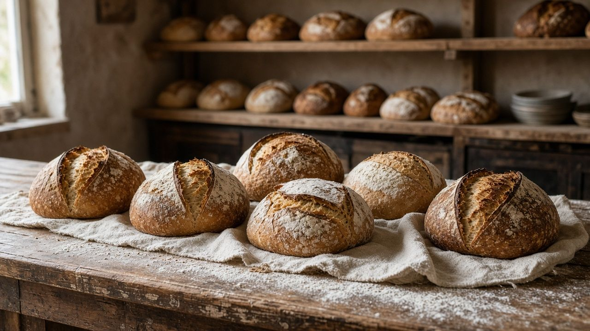
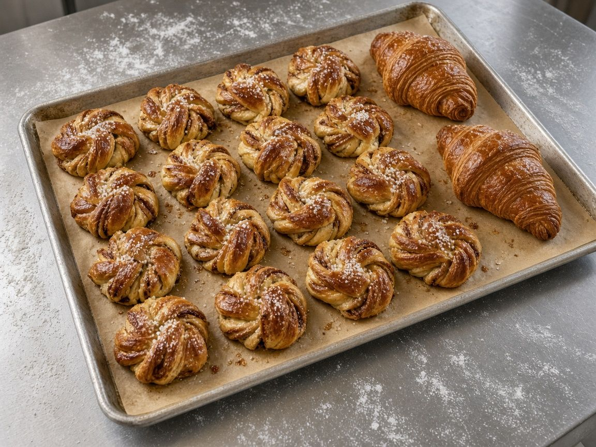
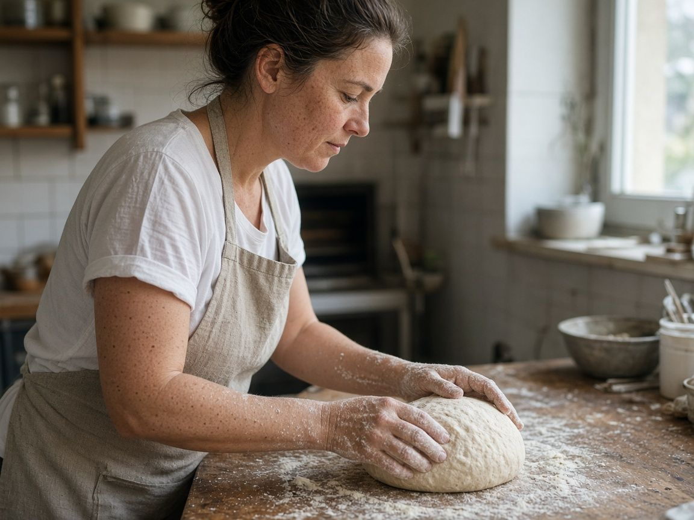

Sourdough bakery · Mercer Row, Fairhaven
Bread that took two days, ready by seven.
We mix on Thursday, shape on Friday and bake before sunrise. Pre-order your loaf by Thursday noon and it waits for you on Saturday with your name on the bag.

48 h
from mixing the dough to slicing the loaf
7:00
doors open Tuesday to Saturday
Thu 12:00
last call for Saturday pre-orders

This week from the oven
Full menu and prices
Three bakers, one oven, no shortcuts
Mara opened Oatwick in 2019 in the old corner shop on Mercer Row. Today she bakes with two others, using flour from a regional mill and a starter she has fed every day since the first week.
Read our storySaturday bread, kept for you
Order by Thursday noon, pick up Saturday between 7:00 and 13:00. Pay at the counter.
Pre-order for Saturday